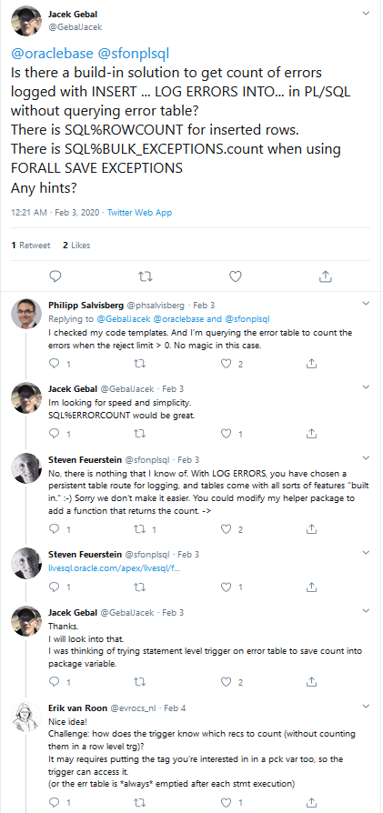

INSERT ... LOG ERRORS and SQL%ROWCOUNT
Oracle SQL has a really neat feature to log the rows that failed to be processed during DML statement (INSERT / UPDATE / DELETE / MERGE ). This is really great feature and you cen read a lot more about it on oracle-base.com The thing I was wondering about is, if I log errors and my DML statement fails, how can I know if that statement had some errored rows. I've checked documentation and asked some experts on Twitter but seems there was no feature to support that.

Example:-- create a table
create table t1 (id integer primary key , v1 integer, v2 integer);
--create error log table for the T1 table
call dbms_errlog.create_error_log('t1');
With the above commands I have two tables created:
desc t1;
desc err$_t1;
Name Null? Type
---- -------- ----------
ID NOT NULL NUMBER(38)
V1 NUMBER(38)
V2 NUMBER(38)
Name Null? Type
--------------- ----- --------------
ORA_ERR_NUMBER$ NUMBER
ORA_ERR_MESG$ VARCHAR2(2000)
ORA_ERR_ROWID$ UROWID
ORA_ERR_OPTYP$ VARCHAR2(2)
ORA_ERR_TAG$ VARCHAR2(2000)
ID VARCHAR2(4000)
V1 VARCHAR2(4000)
V2 VARCHAR2(4000)
Now I can do my Insert statement and capture all error data. Notice that my T1 table has a primary key on ID column, so inserting duplicate value of 1 will result in an error.
insert into t1(id, v1, v2)
select 1,2,3
from dual
connect by level <=2
log errors reject limit unlimited;
1 row inserted.
So I've expected to have two rows inserted(connect by level <=2), but only one row was inserted. I could use that knowledge to deduct that one row was rejected. However, it's often the case, that the source data for your insert statement comes from a complex or expensive to run query. You probably don't want to run the same query again to check how many rows were selected and compare it with number of rows inserted. This is how you could do it, though I wouldn't recommend that as a viable solution. Approach 1 - Count selected data
rollback;
set serveroutput on
declare
l_source_count integer;
l_insert_count integer;
begin
with data as (
select 1,2,3
from dual
connect by level <=2
)
select count(1)
into l_source_count
from data;
insert into t1(id, v1, v2)
select 1,2,3
from dual
connect by level <=2
log errors reject limit unlimited;
l_insert_count := SQL%ROWCOUNT;
dbms_output.put_line('Inserted '||l_insert_count||' out of '||l_source_count||' source rows');
dbms_output.put_line((l_source_count - l_insert_count)||' rows rejected and placed in error table');
end;
/
Inserted 1 out of 2 source rows
1 rows rejected and placed in error table
The reasons why I wouldn't recommend this approach are:
- the source query has to be executed twice
- two query executions means ~double the work only to get the data count of the tables
- in happy-path scenario, which is what you'd normally expect, the first query is total waste as SQL%ROWCOUNT will be equal to SELECT COUNT(1)
Alternatively we could query our error table after the data was loaded into error table. This is a bit tricky, as you really need to know how to identify the data coming from your insert statement and not from any other. It is even more important when you're dealing with concurrent processing or with multiple statements that use error logging for the same table. Luckily, oracle allows ut to add a "tag" as simple expression. Let's rewrite above block now. Approach 2 - Count errors with SQL
rollback;
set serveroutput on
declare
l_error_count integer;
l_insert_count integer;
c_tag constant varchar2(2000) := to_char(current_timestamp, 'yyyy-mm-dd hh24:mi:ssxff')||' insert';
begin
insert into t1(id, v1, v2)
select 1,2,3
from dual
connect by level <=2
log errors (c_tag) reject limit unlimited;
l_insert_count := SQL%ROWCOUNT;
select count(1)
into l_error_count
from err$_t1
where ora_err_tag$ = c_tag;
dbms_output.put_line('Inserted '||l_insert_count||' out of '||(l_error_count+l_insert_count)||' source rows');
dbms_output.put_line(l_error_count||' rows rejected and placed in error table');
end;
/
Statement processed.
Inserted 1 out of 2 source rows
1 rows rejected and placed in error table
This seems more like it. I don't need to query the source data twice. However, I do need to query the error table. . The reasons why I wouldn't recommend this approach are:
- if the error table is big, not cleaned regularly, then the fact that we're querying the data could impact the performance of the load process
- two query executions means more work, only to get the data count out of the tables
- in happy-path scenario, which is what you'd normally expect, the second query is total waste as there will be zero matching rows found in error table
Is there a way I could avoid this? Approach 3 - Create your own counter Oracle SQL language doesn't support SQL%ERRORCOUNT or SQL%ERROR_COUNT in versions up to 19c. That could change in the future but for now, it's not available. There is however a way to avoid extra queries on your error/source table after every insert operation to check for error data count. You can have a counter function that will either:
- count the rows that get inserted into error table
- count the rows that were selected for insert operation
and store the counter value as a variable to be accessed afer the insert statement is finished. This is similar solution to the one I've described here. First let's have a look at some use cases and then we will dive into the implementation of counters. Inserting into a single table with error logging
rollback;
set serveroutput on
declare
l_source_count integer;
l_insert_count integer;
begin
insert into t1(id, v1, v2)
select 1,2,3
from dual
where dml_utils.count_row() > 0
connect by level <=2
log errors reject limit unlimited;
l_insert_count := SQL%ROWCOUNT;
l_source_count := dml_utils.get_count();
dbms_output.put_line('Inserted '||l_insert_count||' out of '||(l_source_count)||' source rows');
dbms_output.put_line((l_source_count-l_insert_count)||' rows rejected and placed in error table');
end;
/
Statement processed.
Inserted 1 out of 2 source rows
1 rows rejected and placed in error table
What happened in this query is that function dml_utils.count_row() was used in where condition.
Each time the function was called, an internal counter was increased in package dml_utils.
The counter was then read and assigned to variable by calling l_source_count := dml_utils.get_count().
Benefits:
- oracle didn't need to process two SQL statements so we should see some benefits
- code became clearer - one SQL statement to do all the work
Pitfalls of the solution:
- for each row processes in SQL statement, there will be a SQL-PL/SQL context-switch - this will degrade the performance of SQL significantly
- SQL-PL/SQL context-switch will occur for each row, even if there are no errors
Using insert all (multi table inserts) with error logging.
truncate table t1;
create table t2 as select * from t1;
call dbms_errlog.create_error_log('t2');
set serveroutput on
declare
l_insert_count integer;
l_error_count integer;
begin
insert all
when dml_utils.count_row('T1') > 0 then
into t1(id, v1, v2)
log errors reject limit unlimited
when dml_utils.count_row('T2') > 0 then
into t2(id, v1, v2)
log errors reject limit unlimited
select 1,2,3
from dual
where dml_utils.count_row() > 0
connect by level <=2
;
l_insert_count := SQL%ROWCOUNT;
l_error_count := dml_utils.get_count('T1') + dml_utils.get_count('T2') - l_insert_count;
dbms_output.put_line('Inserted '||l_insert_count||' rows');
dbms_output.put_line('Attempted to insert '||dml_utils.get_count('T1')||' rows into T1');
dbms_output.put_line('Attempted to insert '||dml_utils.get_count('T2')||' rows into T2');
dbms_output.put_line(l_error_count||' errors found while inserting into T1 or T2');
end;
/
Statement processed.
Inserted 3 rows
Attempted to insert 2 rows into T1
Attempted to insert 2 rows into T2
1 errors found while inserting into T1 or T2
With this approach, we are able to detect that there were errors while loading into error table. What we are missing however is information which table insert has caused errors to occur. To achieve this, we really need to count the records inserted into error table. Oracle error logging for DML statements is implemented in a way that:
- each error record is processed as a separate insert into error log table
- each error record is processed in autonomous transaction
Developer has no control over this behavior in all versions of Oracle database up to 19c (currently available). If you hit a scenario when lots of data goes into error table, you might expect your inserts to become dramatically slower. Having in mind that the LOG ERRORS is executed for each row as a separate statement in separate transaction and the fact that normally we expect far more good data than bad data, we should aim for counting only the bad records, not the good ones. Approach 4 - Count errors, only when they occur The below solution creates a DML trigger on previously created error tables. The presence of trigger does not affect the measurable error logging performance due to the mentioned above row-by-row processing of error records. With below code we can easily capture how many errors were saved into individual error tables.
call dml_utils.create_count_trigger('ERR$_T1');
call dml_utils.create_count_trigger('ERR$_T2');
set serveroutput on
truncate table t1;
truncate table t2;
begin
insert all
into t1(id, v1, v2)
log errors into err$_t1 reject limit unlimited
into t2(id, v1, v2)
log errors into err$_t2 reject limit unlimited
select 1,2,3
from dual
where dml_utils.count_row() > 0
connect by level <=2
;
dbms_output.put_line('Inserted '|| SQL%ROWCOUNT||' rows');
dbms_output.put_line(dml_utils.get_count('ERR$_T1')||' errors found while inserting into T1');
dbms_output.put_line(dml_utils.get_count('ERR$_T2')||' errors found while inserting into T2');
end;
/
Statement processed.
Inserted 3 rows
1 errors found while inserting into T1
0 errors found while inserting into T2
To complete the picture, we can add back the counters for inserts into individual tables:
set serveroutput on
truncate table t1;
truncate table t2;
declare
l_insert_count integer;
l_t1_insert_count integer;
l_t2_insert_count integer;
begin
insert all
when dml_utils.count_row('T1') > 0 then
into t1(id, v1, v2)
log errors into err$_t1 reject limit unlimited
when dml_utils.count_row('T2') > 0 then
into t2(id, v1, v2)
log errors into err$_t2 reject limit unlimited
select 1,2,3
from dual
where dml_utils.count_row() > 0
connect by level <=2
;
l_insert_count := SQL%ROWCOUNT;
l_t1_insert_count := dml_utils.get_count('T1') - dml_utils.get_count('ERR$_T1');
l_t2_insert_count := dml_utils.get_count('T2') - dml_utils.get_count('ERR$_T2');
dbms_output.put_line('Inserted '||l_insert_count||' rows');
dbms_output.put_line('Inserted '||l_t1_insert_count||' rows into T1');
dbms_output.put_line('Inserted '||l_t2_insert_count||' rows into T2');
dbms_output.put_line(dml_utils.get_count('ERR$_T1')||' errors found while inserting into T1');
dbms_output.put_line(dml_utils.get_count('ERR$_T2')||' errors found while inserting into T2');
end;
/
Statement processed.
Inserted 3 rows
Inserted 1 rows into T1
Inserted 2 rows into T2
1 errors found while inserting into T1
0 errors found while inserting into T2
Here is the package used for capturing the table counts and generating the table triggers.
create or replace package dml_utils as
subtype object_name is varchar2(258);
subtype row_count is naturaln;
no_object constant object_name := '[{no table}]';
-- add row to a counter for table name
procedure count_row( p_table_name object_name );
-- add row to a counter for table name and return 1
function count_row( p_table_name object_name := no_object ) return integer;
-- add row to a counter for table name and return the p_txt given as input parameter
function count_row( p_table_name object_name, p_txt varchar2 ) return varchar2;
-- return a counter for table name
-- set the counter for reset on next call to count_row
function get_count( p_table_name object_name := no_object) return row_count;
-- returns a SQL to create a trigger for counting rows on a specified table
function generate_count_trigger( p_table_name object_name ) return varchar2;
-- creates a trigger for counting rows on a specified table
procedure create_count_trigger( p_table_name object_name );
-- drops trigger for counting rows on a specified table
procedure drop_count_trigger( p_table_name object_name );
end;
/
create or replace package body dml_utils as
type row_count_info is record (
cnt row_count := 1,
needs_reset boolean := false
);
type table_row_counts is table of row_count_info index by object_name;
g_first_count row_count_info;
g_row_counts_for_table table_row_counts;
procedure count_row( p_table_name object_name ) is
begin
if g_row_counts_for_table.exists( p_table_name )
and not g_row_counts_for_table( p_table_name ).needs_reset then
g_row_counts_for_table( p_table_name ).cnt := g_row_counts_for_table( p_table_name ).cnt + 1;
else
g_row_counts_for_table( p_table_name ) := g_first_count;
end if;
end;
function count_row( p_table_name object_name := no_object ) return integer is
begin
count_row( p_table_name );
return 1;
end;
function count_row( p_table_name object_name, p_txt varchar2 ) return varchar2 is
begin
count_row( p_table_name );
return p_txt;
end;
function get_count( p_table_name object_name := no_object ) return row_count is
l_result row_count := 0;
begin
if g_row_counts_for_table.exists( p_table_name ) then
g_row_counts_for_table( p_table_name ).needs_reset := true;
l_result := g_row_counts_for_table( p_table_name ).cnt;
end if;
return l_result;
end;
function generate_count_trigger( p_table_name object_name ) return varchar2 is
l_table_name object_name := dbms_assert.sql_object_name( p_table_name );
l_trigger_name object_name := l_table_name||'_AI';
begin
return '
create or replace trigger '||l_trigger_name
||' before insert on '||l_table_name||q'[ for each row
declare
begin
dml_utils.count_row(']'||upper(l_table_name)||q'[');
end;]';
end;
procedure create_count_trigger( p_table_name object_name ) is
pragma autonomous_transaction;
begin
execute immediate generate_count_trigger(p_table_name);
end;
procedure drop_count_trigger( p_table_name object_name ) is
pragma autonomous_transaction;
begin
execute immediate 'drop trigger '||dbms_assert.sql_object_name( p_table_name )||'_AI';
end;
end;
/
You can see the complete set of examples on Oracle LiveSQL
2020-02-24 update - bug found
The described above package dml_utils is not going to work as expected in some scenarios.
This is because the counters only get cleared when dml_utils.count_row is called after call to dml_utils.get_count.
To demonstrate this issue I'll use utPLSQL and it's in-line expectations in anonymous PL/SQL block.
delete from t1;
delete from err$_t1;
commit;
declare
l_insert_count integer;
l_error_count integer;
begin
insert
into t1(id, v1, v2)
select 1,2,3
from dual
connect by level <=5
log errors reject limit unlimited;
ut.expect(sql%rowcount).to_equal( 1 );
ut.expect(dml_utils.get_count('ERR$_T1')).to_equal( 4 );
insert
into t1(id, v1, v2)
select 2,3,4
from dual
log errors reject limit unlimited;
ut.expect(sql%rowcount).to_equal( 1 );
ut.expect(dml_utils.get_count('ERR$_T1')).to_equal( 0 );
end;
/
completed in 102 ms
SUCCESS
Actual: 1 (number) was expected to equal: 1 (number)
SUCCESS
Actual: 4 (number) was expected to equal: 4 (number)
SUCCESS
Actual: 1 (number) was expected to equal: 1 (number)
FAILURE
Actual: 4 (number) was expected to equal: 0 (number)
at "anonymous block", line 22
The second call to dml_utils.get_count('ERR$_T1') should return 0 but returns 4. No extra errors were inserted into error table.
In my next blog post, I'll provide an alternative, more reliable, solution that is not prone to this bug.